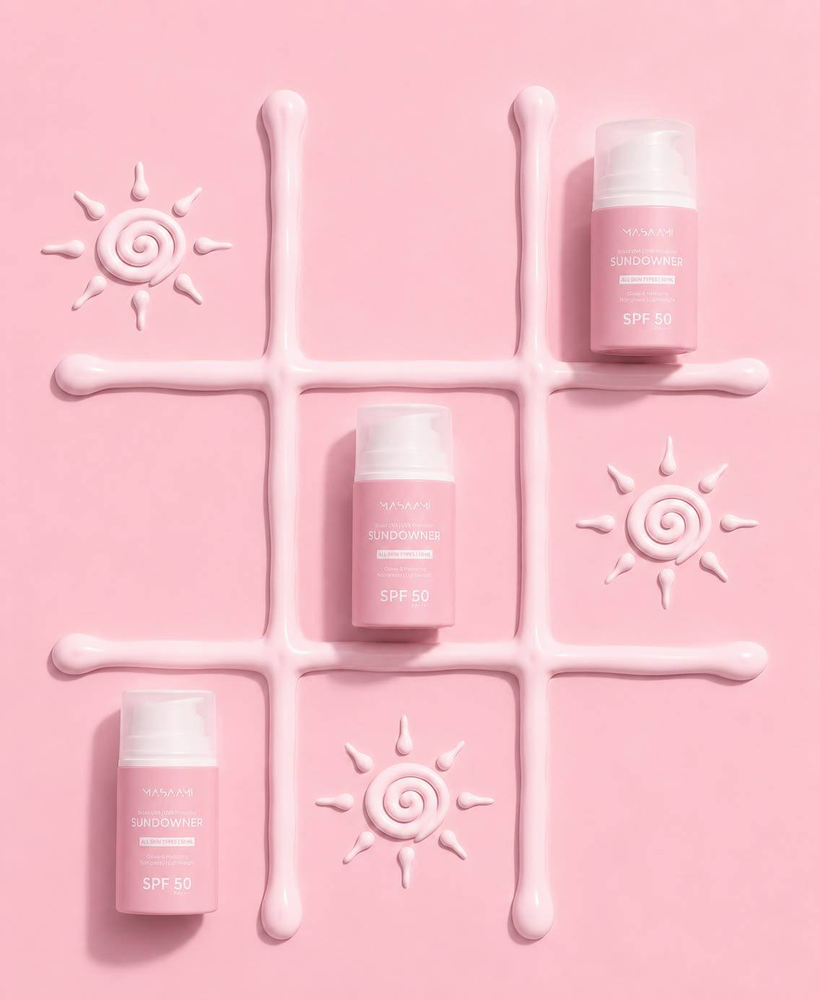

SKINCARE GUIDE
Sun protection & daily skincare
Learn how a simple skincare routine can include cleansing, hydration, active ingredients and daily sun protection. Daily sun exposure causes up to 80% of visible skin aging symptoms. Using sunscreen consistently helps prevent premature aging, sunspots, and skin damage.

ABOUT SUNSCREEN
Why sun protection matters
"Sun protection is essential for healthy skin at any age, as UV radiation penetrates deeply and causes long-term damage."
— American Academy of Dermatology
Sunscreen is a product designed to help protect skin from ultraviolet radiation. Daily sun protection can be part of a basic daytime skincare routine.
For more detailed scientific research, visit the official American Academy of Dermatology Sun Protection Guide .
QUICK FACTS
Four sunscreen facts
- SPF is a measure related to protection against UVB.
- Sunscreen can be part of a daytime skincare routine.
- Broad-spectrum products are designed to cover UVA and UVB.
- Shade, clothing and hats can also help reduce UV exposure.
DAILY ROUTINE
AM & PM skincare key steps
A simple routine can be organized into important steps:
AM
Morning routine key steps
- Cleanser
- Toner
- Serum
- Moisturizer
- SPF 30/50+
PM
Evening routine key steps
- Remove makeup and sunscreen
- Water-based cleanser
- Exfoliation 1–2 times per week
- Toner
- Serum or active ingredients
- Night cream or night mask
INGREDIENT GLOSSARY
Common skincare ingredients
The table below gives simple examples of ingredients and their commonly associated skincare roles.
| Ingredient | Common role | Often used for | Texture / format |
|---|---|---|---|
| Glycerin | Humectant | Hydration | Serums / creams |
| Hyaluronic Acid | Humectant | Hydration | Serums / gels |
| Niacinamide | Multifunctional active | Oil balance / barrier support | Serums / creams |
| Salicylic Acid | Exfoliating acid | Oily / blemish-prone skin | Cleanser / serum |
| Zinc Oxide | UV filter | Sun protection | Sunscreen |
| Summary | Ingredient choice should depend on individual skin needs and product formulation. | ||
MULTIMEDIA
Skincare educational video
Short multimedia content can make educational skincare information easier to explore.